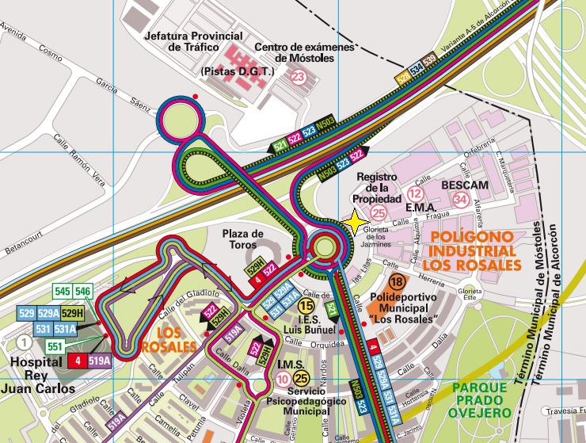

Cómo llegar
A cinco minutos de la salida 18 de la A-5
El centro está en el polígono de Móstoles, en la Calle La Fragua 1, portal 2. Se llega bien en metro, en coche y en autobús,.
Tres formas de venir
Metro, coche y autobús
- MetroUniversidad Rey Juan Carlos. Línea 12, MetroSur. Desde la salida, el centro queda a pocos minutos a pie.
- CocheCarretera A-5, salida 18, justo enfrente de la DGT. Hay aparcamiento en la zona del polígono.
- AutobúsLíneas 522, 523, 529, 529H, 531, 531A y N503 (nocturno).
- Enlace directomaps.app.goo.gl/nEMHDDJqMXuCooTM6
Dirección del centro
- CentroPrevención Siglo 21 — Tarjeta TPC Metal
Calle La Fragua 1, portal 2
Oficinas 2101, 2102, 2103 y 2104
28933 Móstoles, Madrid - TramitaciónCalle Cámara de la Industria 23
28938 Móstoles, Madrid - Móvil630 29 25 16
- Fijo91 617 04 23
- Correoinfo@tpcmetal.es
- HorarioLunes a viernes, 8:00 – 18:00
Calle La Fragua 1, Móstoles. Coordenadas 40.341751, -3.863215.

Plano de la zona. Líneas de autobús, salida de la A-5 frente a la DGT y polígono industrial Los Rosales.
Antes de venir
Tiene que venir puntual a la hora de comienzo del curso de formación, con el DNI, NIE, pasaporte o documento que le acredite. Debe tener un mínimo de conocimiento del idioma español para entender los cursos de formación.